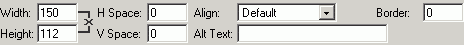

After selecting the desired image, you can set additional attributes for that image:
- Spacing – is used to define the distance between the inserted picture and the other elements around it (images, tables, or text). Users can define values for both Horizontal and Vertical Spacing. The default field values are set to "0".
- Alternative text – this text will be displayed by browsers that do not support images. In the most common browsers, this text also appears when the pointer is over the image.
- Alignment – specifies the position of the picture relative to the other page elements. The available options are: Default, Left, Right, Top, Middle,Bottom.
- Border Thickness – enter a value in pixels if you want to display a border around your picture. The default value is 0, that is, no border will be displayed.
- Width & Height – the
dimensions of the picture. To keep the image's original size, leave these
fields to their default values. You can also resize
the picture later, after it has been inserted in the page, by selecting it
and dragging the resize handles. When changing one of these dimensions, you have two choices:
- to recalculate automatically one of the dimensions according to the value of the other
- to enter the other dimension into the corresponding field (no automatic recalculation shall be done)
- to recalculate automatically one of the dimensions according to the value of the other